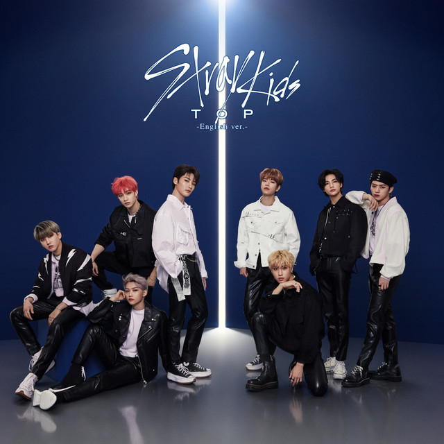

Sobre mí:
Hola, no sé quién lea esto pero me presento: soy
Carlo Alexander Espin Carreño.
Soy estudiante de la carrera de Ingeniería en Sistemas Computacionales
en el Instituto Politécnico Nacional (IPN).
Tengo 21 años (a veces me sorprende haber llegado hasta aquí)
y soy de la Ciudad de México.
Pues en sí mucho que hablar de mí no hay, soy un chico normal que está abierto a lo que la vida me depare.
Me considero una persona dura pero sociable aunque no considero a todos amigos míos. Pero trato de ser una persona amable con todos
y de buen corazón.
Hobbies e Intereses:
- Programar y hacer análisis de datos en bases de datos
- Leer libros. (Te dejo el link para que conozcas acerca de mi saga de libros favorita: Maze Runner Ver aquí)
- Aprender idiomas (especialmente inglés y francés)
- Soy petfriendly, en especial con los perritos, ya que tengo una perrita llamada Pelusa
Música:
Tengo gustos musicales muy variados pero te puedo mencionar algunos de mis favoritos:
-
Adele
Adele es una aclamada cantante y compositora británica nacida el 5 de mayo de 1988 en Londres, conocida por su potente voz y sus baladas emotivas que combinan los géneros soul, pop y jazz. Es una de las artistas musicales con mayores ventas a nivel mundial, destacando por álbumes como 19, 21 y 25, y ha ganado numerosos premios, incluyendo varios Grammys y un Óscar. Su música, caracterizada por letras introspectivas y emotivas, ha resonado con audiencias globales, consolidándola como una figura influyente en la industria musical contemporánea.
Canción favorita: When We Were Young
Escuchar en YouTube -
Stray Kids
Stray Kids es una boy band de K-pop surcoreana formada en 2017 por JYP Entertainment a través de un reality show, compuesta por ocho miembros: Bang Chan, Lee Know, Changbin, Hyunjin, Han, Felix, Seungmin e I.N.. Debutaron oficialmente en 2018 y se han destacado por su música innovadora y coreografías únicas, logrando un gran éxito internacional al encabezar listas como la Billboard 200.
Canción favorita: Lonely St.
Escuchar en YouTube -
Skillet

Skillet es una banda de rock cristiano estadounidense formada en Memphis, Tennessee, en 1996. Conocida por su sonido distintivo que combina elementos de rock alternativo, hard rock y música electrónica, la banda ha lanzado varios álbumes exitosos como "Comatose" y "Awake". Skillet es reconocida por sus letras inspiradoras y energéticas actuaciones en vivo, lo que les ha ganado una base de seguidores leales y múltiples premios en la industria musical.
Canción favorita: Psycho in My Head
Escuchar en YouTube
Áreas de enfoque:
Me especializo en las bases de datos con enfoque en las redes de computadoras, en la ciberseguridad y en el desarrollo de software. Fue una decisión que tome despues de experiencias personales ya que el pasado fui extorsionado y más, por ello pienso que debe haber gente preparada para no combatir a esos extorsionadores pero si para apoyar a quienes no saben que hacer ante esas situaciones.
Medios de Contacto:
Puedes contactarme a través de mi correo electrónico: cespinc2000@alumno.ipn.mx